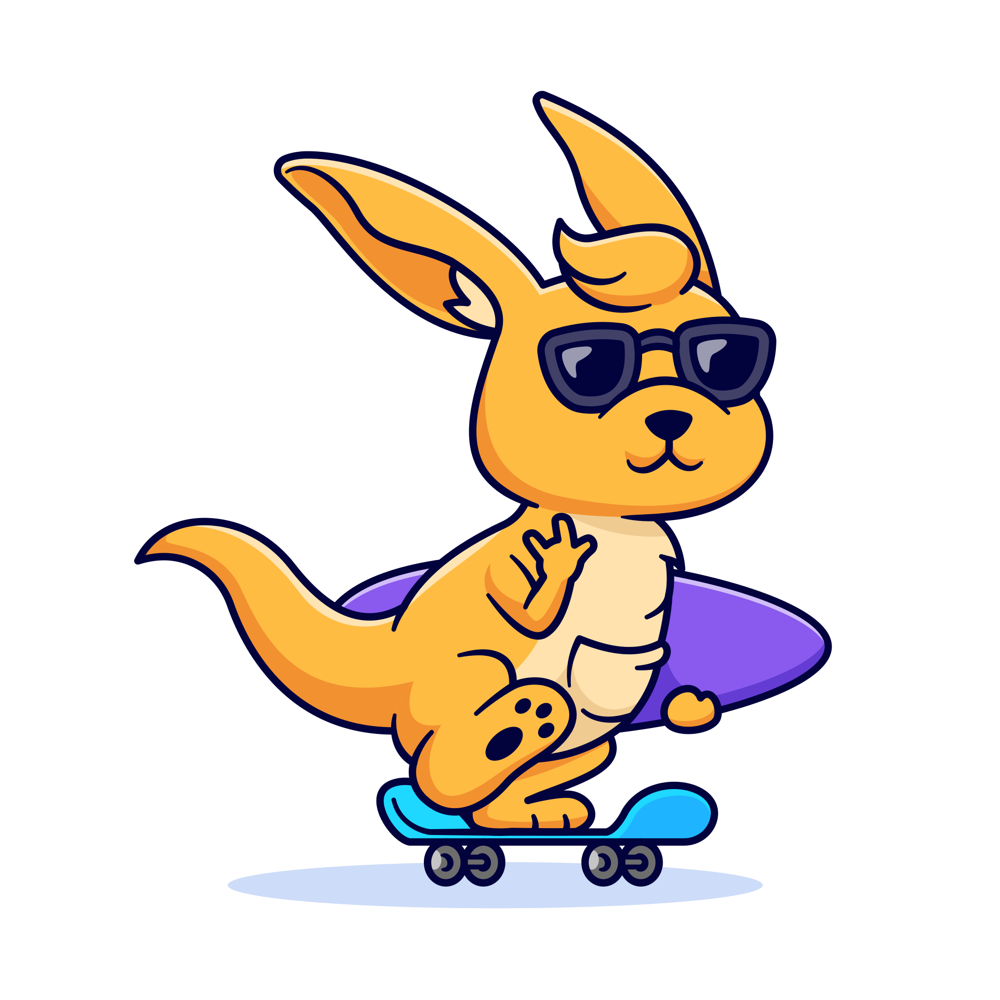

Über mich
Mein Hintergrund
Derzeit befinde ich mich in einer Umschulung zum Fachinformatiker für Anwendungsentwicklung bei LUTZ + GRUB. Neben dem theoretischen Unterricht arbeite ich an praktischen Projekten, um meine Kenntnisse in Programmierung, Softwareentwicklung und modernen Technologien zu vertiefen.
Mein Fokus liegt dabei auf C#, Frontend-Entwicklung und dem Erlernen neuer Werkzeuge, die mich in meiner zukünftigen Arbeit als Entwickler unterstützen.
Meine Hobbys
- PlayStation spielen
- Programmieren und kleine Spiele entwickeln
- Musik hören
- Spazieren gehen und neue Orte erkunden
- Rätsel und Logikspiele lösen
Warum IT?
Ich habe mich für den Bereich IT entschieden, weil mich Technik und digitale Lösungen schon immer fasziniert haben. Die Möglichkeit, mit Logik, Code und modernen Technologien echte Ergebnisse zu schaffen, motiviert mich jeden Tag aufs Neue.
Ein weiterer Grund ist die Vielfalt und Dynamik der IT-Branche. Sie bietet ständig neue Herausforderungen, Lernmöglichkeiten und spannende Projekte. Ich schätze es, dass ich meine Fähigkeiten kontinuierlich erweitern kann und gleichzeitig an praktischen Anwendungen arbeite, die einen echten Mehrwert schaffen. Die Kombination aus Kreativität, Problemlösung und zukunftsorientierten Perspektiven macht die IT für mich zur perfekten Wahl.